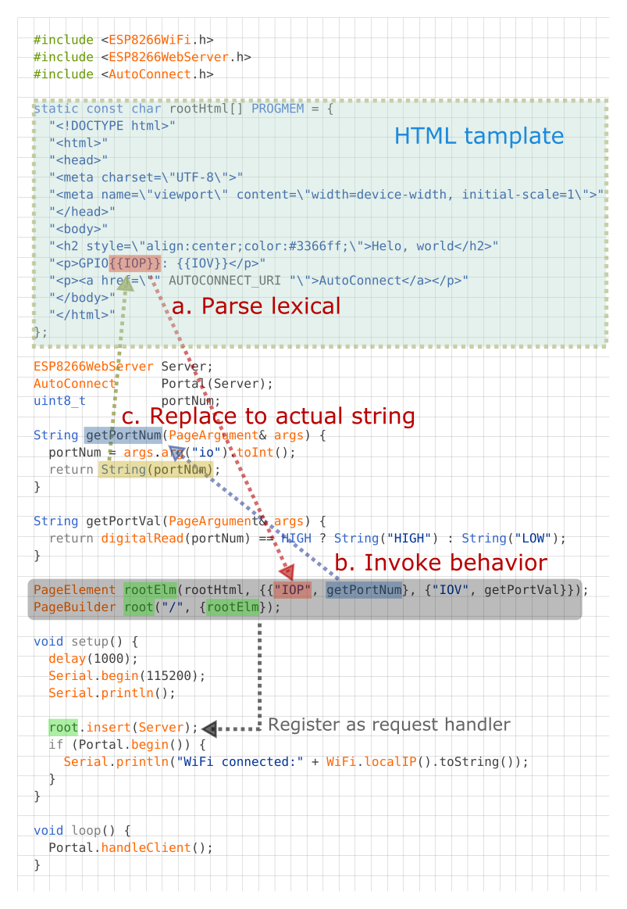

Other operation settings and controls
AutoConnect also has features that are not directly related to WiFi connection abilities. They're mostly like a little accessory but can reduce the amount of sketch code.
- Built-in OTA update
- Choice of the filesystem for ESP8266
- Debug Print
- File uploading via built-in OTA feature
- Refers the hosted ESP8266WebServer/WebServer
- Reset the ESP module after disconnecting from WLAN
- Ticker for WiFi status
- Usage for automatically instantiated ESP8266WebServer/WebServer
- Use with the PageBuilder library
Built-in OTA update feature¶
AutoConnect features a built-in OTA function to update ESP module firmware. You can easily make the Sketch that equips OTA and able to operate with the AutoConnect menu.
AutoConnectConfig::ota specifies to import the built-in OTA update class into the Sketch.
See the Updates with the Web Browser chapter for details.
Choice of the filesystem for ESP8266¶
For ESP8266, since the Arduino core v2.7.0, SPIFFS has deprecated and the migration to LittleFS is being promoted currently. AutoConnect has adopted LittleFS as the default filesystem to follow the core standard.
However, SPIFFS is still valid. AutoConnect can correctly compile and execute sketches made with SPIFFS assumed. When you make an AutoConnect sketch with SPIFFS enabled, you need to change the macro definition that AutoConnectDefs.h has.
AC_USE_SPIFFS definition will enable SPIFFS as the filesystem.
#define AC_USE_SPIFFS
See also the FAQ to help you enable AC_USE_SPIFFS correctly.
Debug Print¶
You can output AutoConnect monitor messages to the Serial. A monitor message activation switch is in an include header file AutoConnectDefs.h of library source. Define AC_DEBUG macro to output the monitor messages.1
#define AC_DEBUG
AutoConnect does not automatically start the Serial even if AC_DEBUG is activated. The Sketch should start the Serial during its setup phase using Serial.begin(BAUDRATE).
How to enable AC_DEBUG
The #define is a C++ preprocessor directive. The build process of the Sketch by the Arduino IDE is processed independently of the subsequent C++ compilation unit. Writing the #define directive for AC_DEBUG in the Sketch has no effect on the AutoConnect library.
To compile the AutoConnect library with the AC_DEBUG directive, you can either edit the library source code directly (usually it is located in ~/Arduino/libraries/AutoConnect/src) or use a build system which can configure the preprocessor directives externally such as PlatformIO.
File uploading via built-in OTA feature¶
The built-in OTA update feature can update the firmware as well as upload regular files placed in the file system on the ESP module. It allows a regular file is uploaded via OTA using the Update of AutoConnect menu without adding a particular custom Web page that contains AutoConnectFile. This ability is useful for transferring the JSON document of the custom web page definition, the external parameter file of your sketch, and so on into the target ESP module via OTA.
The built-in OTA update feature determines where to save the uploaded file according to the filename pattern. By default, a filename with ends a .bin extension is subject to firmware updates. A file that has the other extension will be saved as a regular to the filesystem in the flash. The file extension that should be treated as the firmware is defined as the AUTOCONNECT_UPLOAD_ASFIRMWARE macro in AutoConnectDefs.h header file of the library source code. When dealing with another extension for the updating file as firmware change this macro definition.
#define AUTOCONNECT_UPLOAD_ASFIRMWARE ".bin"
Specify with the PlatformIO
AUTOCONNECT_UPLOAD_ASFIRMWARE pattern will be embedded into the binary sketch is determined at compile time. The PlatformIO build system allows you to change the pattern expression for each project without modifying the library source code.
build_flags=-DAUTOCONNECT_UPLOAD_ASFIRMWARE='".bin"'
Refers the hosted ESP8266WebServer/WebServer¶
Constructing an AutoConnect object variable without parameters then creates and starts an ESP8266WebServer/WebServer inside the AutoConnect. This object variable could be referred by AutoConnect::host function to access ESP8266WebServer/WebServer instance as like below.
AutoConnect Portal;
Portal.begin();
ESP8266WebServer& server = Portal.host();
server.send(200, "text/plain", "Hello, world");
When host() is valid
The host() can be referred at after AutoConnect::begin.
Reset the ESP module after disconnecting from WLAN¶
Disconnect by menu operation allows the ESP8266/ESP32 module to reset automatically after disconnecting from WLAN. This behavior is enabled by default and can be disabled by AutoConnectConfig::autoReset settings.
AutoConnect Portal;
AutoConnectConfig Config;
Config.autoReset = false; // Continue sketch processing even after disconnecting from by AutoConnect menu.
Portal.config(Config);
Portal.begin();
The autoReset setting will automatically reset the ESP module when disconnecting WiFi only if you intentionally navigate the menu. And it does not participate in passive disconnection conditions such as disconnection due to sketch processing or loss of WiFi signal.
You can combine autoReset with autoReconnect to disconnect from WiFi and automatically reconnect to another AP while continuing the Sketch operation.
The Sketch below shows an example of a meaningful combination of autoReset and autoReconnect. It can connect to the access point once with the captive portal but assumes that it can be disconnected from the WLAN by intentional menu navigation. In that case, the Sketch will continue processing without resetting the module. Then an external switch allows to start automatic reconnecting. In this situation, if known access points appear nearby, the ESP module will automatically reconnect to them in the handleClient loop. In this state transition, the module continues the Sketch process without resetting.
AutoConnect Portal;
AutoConnectConfig Config;
const int reconnectSwitch = 14; // Assign the reconnect switch to GPIO14
ICACHE_RAM_ATTR void detectsReconnect() {
if (!Config.autoReconnect) { // Chattering elimination
// autoReconnect is enabled by interrupt of the GPIO trigger,
Config.autoReconnect = true; // Activate reconnection
Config.reconnectInterval = 2; // Attempt to reconnect at 60 seconds intervals.
Portal.config(Config);
Serial.printf("Turn on autoReconnect, interval %d[s]\n", Config.reconnectInterval * AUTOCONNECT_UNITTIME);
}
}
void setup() {
delay(1000);
Serial.begin(115200);
Serial.println();
Config.ticker = true; // Setting up WiFi connection indicator
Portal.config(Config);
if (Portal.begin()) {
Config.autoReset = false;
Portal.config(Config);
// Set external switch pin to reconnect as interrupt, assign interrupt function and set RISING mode
pinMode(reconnectSwitch, INPUT_PULLUP);
attachInterrupt(digitalPinToInterrupt(reconnectSwitch), detectsReconnect, RISING);
}
}
void loop() {
if (WiFi.status() == WL_CONNECTED) {
/*
Here, your sketch process with WiFi connection
*/
}
else {
/*
Here, your sketch process without WiFi connection
*/
}
// Post process, turn to initial state of autoReconnect.
if (Config.autoReconnect) {
if (WiFi.status() == WL_CONNECTED) {
Config.autoReconnect = false;
Portal.config(Config);
}
}
// The actual reconnection takes place within handleClient.
Portal.handleClient();
}
An external switch wiring to GPIO
The wiring for the above Sketch assumes a momentary effects switch that connects the GPIO pin 14 to GND. You can experience it with easily wire on a breadboard using a NodeMCU as like:

Ticker for WiFi status¶
Flicker signal can be output from the ESP8266/ESP32 module according to WiFi connection status. By wiring the LED to the signal output pin with the appropriate limiting resistor, you can know the WiFi connection status through the LED blink during the inside behavior of AutoConnect::begin and loop of AutoConnect::handleClient.
AutoConnectConfig::ticker option specifies flicker signal output. The following sketch is an example of blinking the active-low LED connected to GPIO16 depending on the WiFi connection status.2
AutoConnect portal;
AutoConnectConfig Config;
Config.ticker = true;
config.tickerPort = 16;
Config.tickerOn = LOW;
portal.config(Config);
portal.begin();
The AutoConnect ticker indicates the WiFi connection status in the following three flicker patterns:
- Short blink: The ESP module stays in AP_STA mode.
- Short-on and long-off: No STA connection state. (i.e. WiFi.status != WL_CONNECTED)
- No blink: WiFi connection with access point established and data link enabled. (i.e. WiFi.status = WL_CONNECTED)
The flicker cycle length is defined by some macros in AutoConnectDefs.h header file.
#define AUTOCONNECT_FLICKER_PERIODAP 1000 // [ms]
#define AUTOCONNECT_FLICKER_PERIODDC (AUTOCONNECT_FLICKER_PERIODAP << 1) // [ms]
#define AUTOCONNECT_FLICKER_WIDTHAP 96 // (8 bit resolution)
#define AUTOCONNECT_FLICKER_WIDTHDC 16 // (8 bit resolution)
- AUTOCONNECT_FLICKER_PERIODAP:
Assigns a flicker period when the ESP module stays in AP_STA mode. - AUTOCONNECT_FLICKER_PERIODDC:
Assigns a flicker period when WiFi is disconnected. - AUTOCONNECT_FLICKER_WIDTHAP and AUTOCONNECT_FLICKER_WIDTHDC:
Specify the duty rate for each period [ms] in 8-bit resolution.
Ticker during OTA
The LED blinking will always be a short blinking during the update via OTA, regardless of the definition of the flicker cycle.
AutoConnectConfig::tickerPort specifies a port that outputs the flicker signal. If you are using an LED-equipped ESP module board, you can assign a LED pin to the tick-port for the WiFi connection monitoring without the external LED. The default pin is arduino valiant's LED_BUILTIN. You can refer to the Arduino IDE's variant information to find out which pin actually on the module assign to LED_BUILTIN.3
AutoConnectConfig::tickerOn specifies the active logic level of the flicker signal. This value indicates the active signal level when driving the ticker. For example, if the LED connected to tickPort lights by LOW, the tickerOn is LOW. The logic level of LED_BUILTIN for popular modules are as follows:
| module | Logic level | LED_BUILTIN Pin | Arduino alias |
|---|---|---|---|
| NodeMCU V1.0 | Active-low | 16 | D0 |
| WEMOS D1 mini | Active-low | 2 | D4 |
| SparkFun ESP8266 Thing | Active-high | 5 | |
| Adafruit Feather HUZZAH ESP8266 | Active-low | 0 | |
| NodeMCU 32s | Active-high | 2 | T2 |
| LOLIN32 Pro | Active-low | 5 | SS |
| SparkFun ESP32 Thing | Active-high | 5 | |
| Adafruit Feather HUZZAH32 | Active-high | 13 | A12 |
Usage for automatically instantiated ESP8266WebServer/WebServer¶
The Sketch can handle URL requests using ESP8266WebServer or WebServer that AutoConnect started internally. ESP8266WebServer/WebServer instantiated dynamically by AutoConnect can be referred to by AutoConnect::host function. The Sketch can use the 'on' function, 'send' function, 'client' function and others by ESP8266WebServer/WebServer reference of its return value.
#include <ESP8266WiFi.h>
#include <ESP8266WebServer.h>
#include <AutoConnect.h>
AutoConnect Portal;
void handleRoot() {
ESP8266WebServer& IntServer = Portal.host();
IntServer.send(200, "text/html", "Hello, world");
}
void handleNotFound() {
ESP8266WebServer& IntServer = Portal.host();
IntServer.send(404, "text/html", "Unknown.");
}
void setup() {
bool r = Portal.begin();
if (r) {
ESP8266WebServer& IntServer = Portal.host();
IntServer.on("/", handleRoot);
Portal.onNotFound(handleNotFound); // For only onNotFound.
}
}
void loop() {
Portal.host().handleClient();
Portal.handleRequest();
/* or following one line code is equ.
Portal.handleClient();
*/
}
ESP8266WebServer/WebServer function should be called after AutoConnect::begin
The Sketch cannot refer to an instance of ESP8266WebServer/WebServer until AutoConnect::begin completes successfully.
Do not use with ESP8266WebServer::begin or WebServer::begin
ESP8266WebServer/WebServer is already running inside the AutoConnect.
Use with the PageBuilder library¶
In ordinary, the URL handler will respond to the request from the client by sending some HTML. It will dynamically generate the HTML to respond to based on the sensing data etc. for the changing scene, but it contains elements of variable values in the middle of the HTML fixed string. Therefore, sketches tend to be in a tangled that repeats the logic for data handling and string splicing in turn, which tends to be less readable and maintainable.
PageBuilder library is an HTML assembly aid. it can handle predefined HTML like the template and simplify an HTML string assemble logic, and also the generated HTML send automatically.
An example sketch used with the PageBuilder as follows and it explains how it aids for the HTML generating. Details for Github repository.

-
The source code placement of common macros for AutoConnect since v0.9.7 has changed. ↩
-
The ESP module pin mapping is different for each breakout. Definitions for assigning pin numbers to pin names usually exist in the variant definition program of Arduino core packages. (e.g. esp8266/arduino core, arduino-esp32 core)
You may find the definition aspins_arduino.h. ↩ -
It's defined in the
pins_arduino.hfile, located in the sub-folder named variants wherein Arduino IDE installed folder. ↩